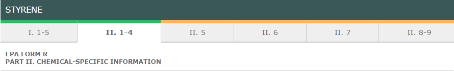

When editing a FormR the FormR is automatically validated for completeness of entries and appropriate type of data whenever it is saved.
If you transfer FormR data from the Management System, you will need to open each FormR and save it to validate the data.
In the FormR, a yellow bar on the tab indicates that areas within that page are either missing required data or fail validation for correct data type or values. The fields that need modification are highlighted in the tab.
A green bar on the tab indicates that the page is complete and has passed validation.
Note: A green bar does NOT mean that the data content is necessarily correct, merely that the required amount and type of data has been entered.

In order to "Submit" the FormR to make it ready for printing or filing, the FormR must have passed all validations. See Submitting or Desubmitting a FormR.